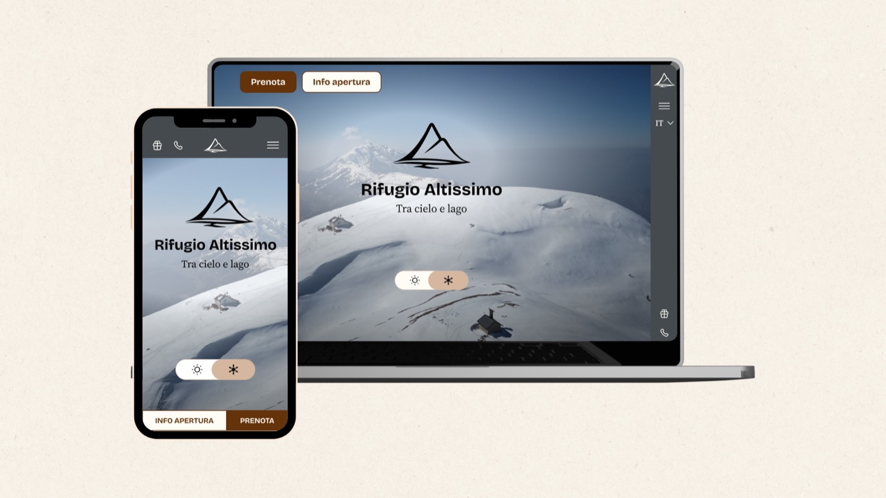
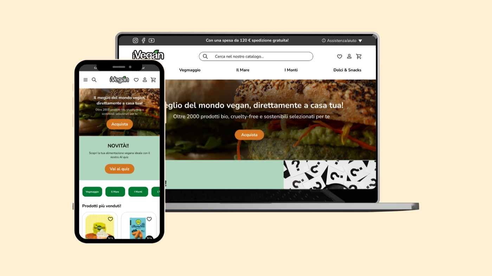

All work
Study projects
Two redesigns from my master's in UX/UI design. They aren't client work: they show how I work, from research to testing with real people.

Rifugio Altissimo
Website redesign for a mountain hut on Monte Baldo
- Year
- 2026
- What I did
- Brand, research, design, testing
- Tools
- Figma, Maze, Miro
- See the project
- Presentation on Canva Prototipo mobile Prototipo desktop
The starting point
The "Damiano Chiesa" hut sits on the highest peak of Monte Baldo, above Lake Garda. Its Wix website didn't do the place justice: confusing navigation, nothing designed for mobile and a hidden booking flow.
What I did
- Brand: a new logo with the "A" of Altissimo inside the mountain, and the tagline "Tra cielo e lago" (between sky and lake).
- Research: a review of the site against Nielsen's 10 heuristics, 5 competing huts, a survey with 15 people and 3 personas.
- Structure and visuals: every page, mobile first, with a summer and a winter version and a clickable Figma prototype.
- Testing: 8 people from the real audience tried the prototype on Maze with 4 tasks: book a dinner, book a room, find a trail, buy from the shop.
What the test showed
- All 8 participants managed to book a room.
- On average, 83% of tasks were completed.
- Information takes 58% less time to find than on the current site.
- Usability score (SUS) 74 out of 100, above the target of 70. Average satisfaction 4.1 out of 5.

iVegan
Redesign of an online shop for vegan products
- Year
- 2025
- What I did
- Research, accessibility, design, testing
- Tools
- Figma, Maze, Wave
- See the project
- Prototipo mobile Prototipo desktop
The starting point
iVegan is Italy's largest online shop for vegan products. The goal was to make shopping on the site easier: better organised pages, clearer copy and buttons, fewer steps to checkout.
The phases, one document each
The same method, on real client work
See how I used it for a client, or tell me about your project: the first call is free.